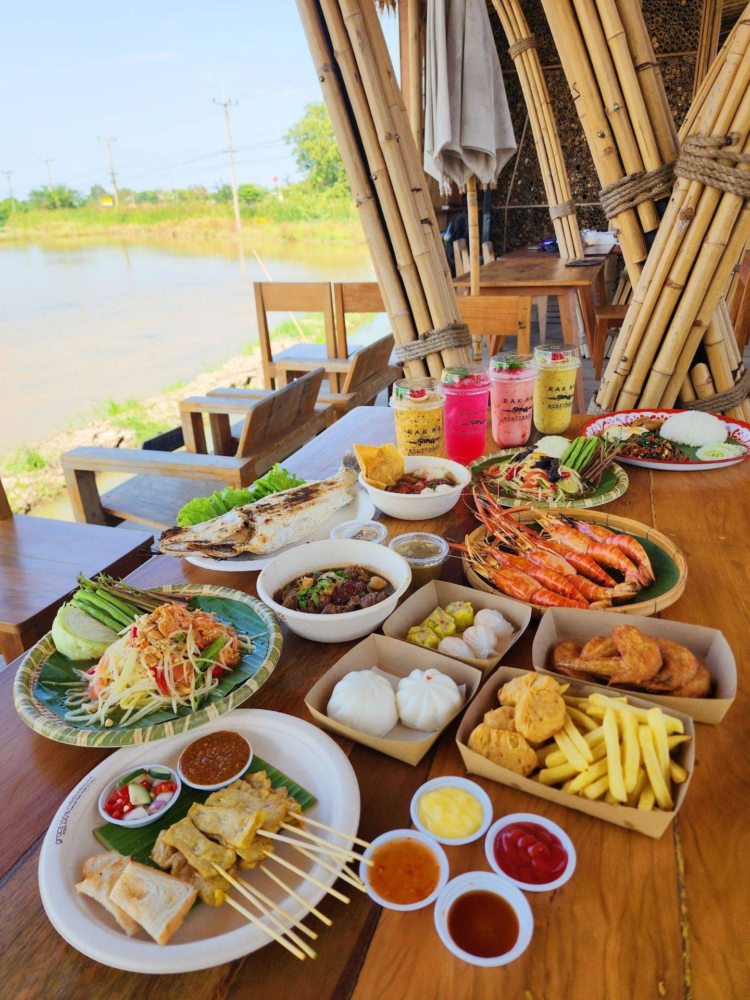
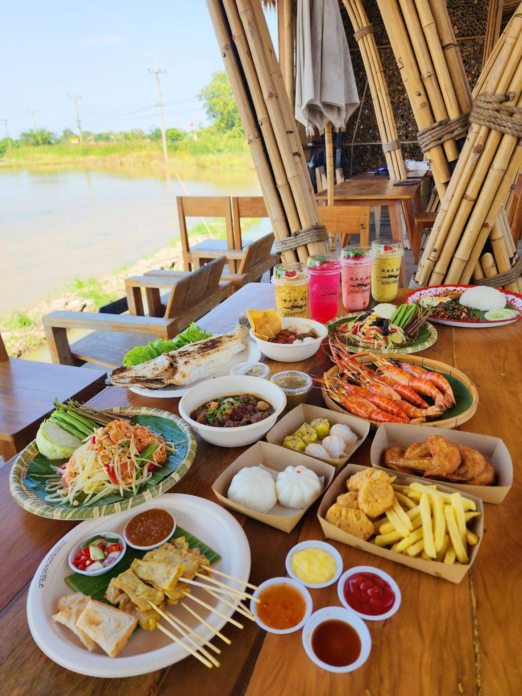

คาเฟ่แนะนำในอยุธยา
บ้านข้าวหนม
“บ้านข้าวหนม คาเฟ่เล็กๆ ที่ตั้งอยู่ในตัวเมืองอยุธยา สามารถจอดรถได้หน้าร้าน ขายขนมไทยหลากหลายชนิด รสชาติอร่อย ราคาไม่แพง มีที่นั่งในร้าน และมีที่นั่งนอนพักผ่อนด้วย สามารถมาพักผ่อนได้เป็นอย่างดี ร้านน่ารัก สะอาด บรรยากาศดี มีเสียงเพลงเพราะๆ ที่เป็นชิวๆ สำหรับคนที่ชอบความเงียบสงบ ร้านนี้เป็นที่เลือกที่ดีครับบ”
เบอร์โทร: 097 921 9465
เวลาเปิด-ปิด: 08:00-18:00 น. หยุดทุกวัน จ
รักษ์นาคาเฟ่
 

“รักษ์นาคาเฟ่ คาเฟ่เล็กๆ ที่ตั้งอยู่ในตัวเมืองอยุธยา สามารถจอดรถได้หน้าร้าน ขายกาแฟ ชา ขนมหวาน และอาหารเช้า รสชาติอร่อย ราคาไม่แพง มีที่นั่งในร้าน และมีที่นั่งนอนพักผ่อนด้วย สามารถมาพักผ่อนได้เป็นอย่างดี ร้านน่ารัก สะอาด บรรยากาศดี มีเสียงเพลงเพราะๆ ที่เป็นชิวๆ สำหรับคนที่ชอบความเงียบสงบ ร้านนี้เป็นที่เลือกที่ดีครับบ”
เบอร์โทร: 065 478 5090
เวลาเปิด-ปิด: 08:00-18:30 น. เปิดทุกวัน
The Summer House


“The Summer House คาเฟ่เล็กๆ ที่ตั้งอยู่ในตัวเมืองอยุธยา สามารถจอดรถได้หน้าร้าน ขายกาแฟ ชา ขนมหวาน และอาหารเช้า รสชาติอร่อย ราคาไม่แพง มีที่นั่งในร้าน และมีที่นั่งนอนพักผ่อนด้วย สามารถมาพักผ่อนได้เป็นอย่างดี ร้านน่ารัก สะอาด บรรยากาศดี มีเสียงเพลงเพราะๆ ที่เป็นชิวๆ สำหรับคนที่ชอบความเงียบสงบ ร้านนี้เป็นที่เลือกที่ดีครับบ”
เบอร์โทร: 094 224 2223
เวลาเปิด-ปิด: 09:30-21:30 น. เปิดทุกวัน
Busaba Ayutthaya Cuisine


“Busaba Ayutthaya Cuisine คาเฟ่เล็กๆ ที่ตั้งอยู่ในตัวเมืองอยุธยา สามารถจอดรถได้หน้าร้าน ขายกาแฟ ชา ขนมหวาน และอาหารเช้า รสชาติอร่อย ราคาไม่แพง มีที่นั่งในร้าน และมีที่นั่งนอนพักผ่อนด้วย สามารถมาพักผ่อนได้เป็นอย่างดี ร้านน่ารัก สะอาด บรรยากาศดี มีเสียงเพลงเพราะๆ ที่เป็นชิวๆ สำหรับคนที่ชอบความเงียบสงบ ร้านนี้เป็นที่เลือกที่ดีครับบ”
เบอร์โทร: 084 026 2657
เวลาเปิด-ปิด: จ-ศ 10:00-19:30 น. ส-อา 09:30 -19:30
ปรางค์ วิว


“ปรางค์ วิว คาเฟ่เล็กๆ ที่ตั้งอยู่ในตัวเมืองอยุธยา สามารถจอดรถได้หน้าร้าน ขายกาแฟ ชา ขนมหวาน และอาหารเช้า รสชาติอร่อย ราคาไม่แพง มีที่นั่งในร้าน และมีที่นั่งนอนพักผ่อนด้วย สามารถมาพักผ่อนได้เป็นอย่างดี ร้านน่ารัก สะอาด บรรยากาศดี มีเสียงเพลงเพราะๆ ที่เป็นชิวๆ สำหรับคนที่ชอบความเงียบสงบ ร้านนี้เป็นที่เลือกที่ดีครับบ”
เบอร์โทร: 089 801 0138
เวลาเปิด-ปิด: 09:00-20:00 น เปิดทุกวัน
ลา ลูแบร์ คาเฟ่ แอนด์ เรสเตอร์รองต์


“ลา ลูแบร์ คาเฟ่ แอนด์ เรสเตอร์รองต์ คาเฟ่เล็กๆ ที่ตั้งอยู่ในตัวเมืองอยุธยา สามารถจอดรถได้หน้าร้าน ขายกาแฟ ชา ขนมหวาน และอาหารเช้า รสชาติอร่อย ราคาไม่แพง มีที่นั่งในร้าน และมีที่นั่งนอนพักผ่อนด้วย สามารถมาพักผ่อนได้เป็นอย่างดี ร้านน่ารัก สะอาด บรรยากาศดี มีเสียงเพลงเพราะๆ ที่เป็นชิวๆ สำหรับคนที่ชอบความเงียบสงบ ร้านนี้เป็นที่เลือกที่ดีครับบ”
เบอร์โทร: 082 551 9786
เวลาเปิด-ปิด: 09:30-19:00
The JIM's Cafe


“The JIM's Cafe คาเฟ่เล็กๆ ที่ตั้งอยู่ในตัวเมืองอยุธยา สามารถจอดรถได้หน้าร้าน ขายกาแฟ ชา ขนมหวาน และอาหารเช้า รสชาติอร่อย ราคาไม่แพง มีที่นั่งในร้าน และมีที่นั่งนอนพักผ่อนด้วย สามารถมาพักผ่อนได้เป็นอย่างดี ร้านน่ารัก สะอาด บรรยากาศดี มีเสียงเพลงเพราะๆ ที่เป็นชิวๆ สำหรับคนที่ชอบความเงียบสงบ ร้านนี้เป็นที่เลือกที่ดีครับบ”
เบอร์โทร: 096 857 8875
เวลาเปิด-ปิด: 08:30-17:30 น. หยุดทุกวัน อ
Krasai.cafe


“Krasai.cafe คาเฟ่เล็กๆ ที่ตั้งอยู่ในตัวเมืองอยุธยา สามารถจอดรถได้หน้าร้าน ขายกาแฟ ชา ขนมหวาน และอาหารเช้า รสชาติอร่อย ราคาไม่แพง มีที่นั่งในร้าน และมีที่นั่งนอนพักผ่อนด้วย สามารถมาพักผ่อนได้เป็นอย่างดี ร้านน่ารัก สะอาด บรรยากาศดี มีเสียงเพลงเพราะๆ ที่เป็นชิวๆ สำหรับคนที่ชอบความเงียบสงบ ร้านนี้เป็นที่เลือกที่ดีครับบ”
เบอร์โทร: 094 960 9980
เวลาเปิด-ปิด: 10:00-20:00 น. หยุดทุกวัน อ
Peko Peko Cafe


“Peko Peko Cafe คาเฟ่เล็กๆ ที่ตั้งอยู่ในตัวเมืองอยุธยา สามารถจอดรถได้หน้าร้าน ขายกาแฟ ชา ขนมหวาน และอาหารเช้า รสชาติอร่อย ราคาไม่แพง มีที่นั่งในร้าน และมีที่นั่งนอนพักผ่อนด้วย สามารถมาพักผ่อนได้เป็นอย่างดี ร้านน่ารัก สะอาด บรรยากาศดี มีเสียงเพลงเพราะๆ ที่เป็นชิวๆ สำหรับคนที่ชอบความเงียบสงบ ร้านนี้เป็นที่เลือกที่ดีครับบ”
เบอร์โทร: 095 505 8278
เวลาเปิด-ปิด: 09:00-20:00 น. หยุดทุกวัน จ-อ
Tewa Café


“Tewa Café คาเฟ่เล็กๆ ที่ตั้งอยู่ในตัวเมืองอยุธยา สามารถจอดรถได้หน้าร้าน ขายกาแฟ ชา ขนมหวาน และอาหารเช้า รสชาติอร่อย ราคาไม่แพง มีที่นั่งในร้าน และมีที่นั่งนอนพักผ่อนด้วย สามารถมาพักผ่อนได้เป็นอย่างดี ร้านน่ารัก สะอาด บรรยากาศดี มีเสียงเพลงเพราะๆ ที่เป็นชิวๆ สำหรับคนที่ชอบความเงียบสงบ ร้านนี้เป็นที่เลือกที่ดีครับบ”
เบอร์โทร: 087 546 8523
เวลาเปิด-ปิด: จ-พ-พฤ-ศ 09:00-17:00 น. ส-อา 09:00-18:30 น. หยุดทุกวัน อ